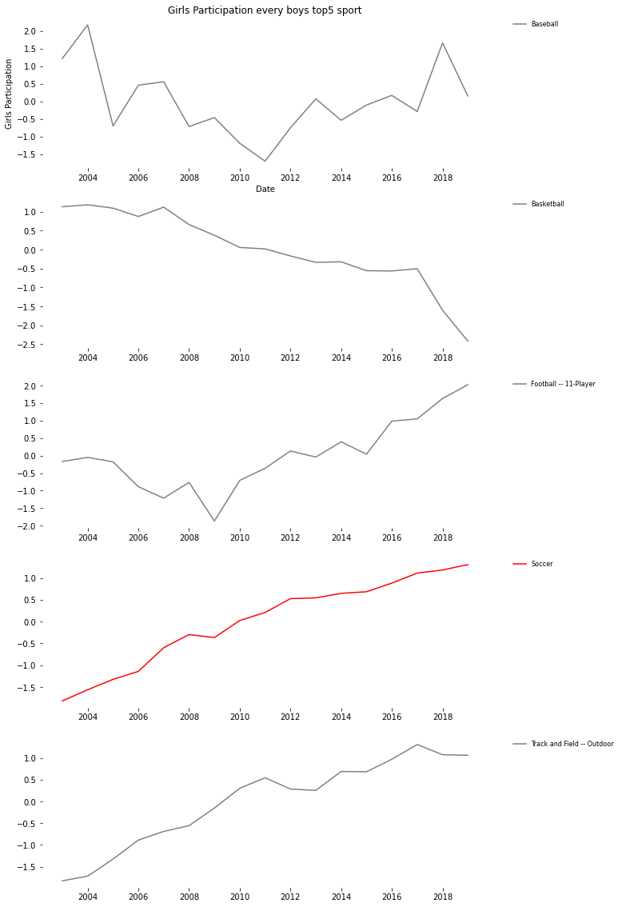
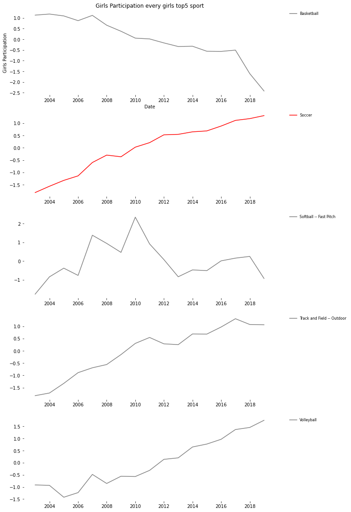

2020/W24¶
data world¶
[3]:
import seaborn as sns
import matplotlib as mpl
import matplotlib.pyplot as plt
mpl.rcParams['figure.figsize'] = [10.0, 8.0]
[4]:
import pandas as pd
df = pd.read_excel('https://query.data.world/s/rvtskle5ynqda43berhhy4rpu4odgf')
[5]:
df['date'] = df['Year'].apply(lambda x: x.split('/')[1])
df['date'] = pd.to_datetime(df['date'])
What’s dataset?¶
[6]:
df.info()
<class 'pandas.core.frame.DataFrame'>
RangeIndex: 55135 entries, 0 to 55134
Data columns (total 8 columns):
# Column Non-Null Count Dtype
--- ------ -------------- -----
0 Year 55135 non-null object
1 State 55134 non-null object
2 Sport 55135 non-null object
3 Boys School 55130 non-null float64
4 Girls School 55125 non-null float64
5 Boys Participation 55132 non-null float64
6 Girls Participation 55129 non-null float64
7 date 55135 non-null datetime64[ns]
dtypes: datetime64[ns](1), float64(4), object(3)
memory usage: 3.4+ MB
Whats kind of sports do they participate?¶
[7]:
print('Nomber of sports is ', len(df.Sport.unique()))
print(df.Sport.unique())
Nomber of sports is 96
['Adapted Basketball' 'Adapted Bocce - Indoor' 'Adapted Bowling'
'Adapted Floor Hockey' 'Adapted Soccer' 'Adapted Softball'
'Adapted Track' 'Adapted Volleyball' 'Adaptive Corn Toss' 'Adaptive Golf'
'Adaptive Handball' 'Adaptive Strength Training' 'Adaptive Tennis'
'Air Riflery' 'Archery' 'Badminton' 'Baseball' 'Basketball'
'Bass Fishing' 'Beach Volleyball' 'Bocce - Outdoor' 'Bowling'
'Canoe Paddling' 'Competitive Spirit* (Boys who cheer/Girls who cheer)'
'Crew' 'Cross Country' 'Cycling' 'Dance' 'Dance/Drill'
'Dance Team, High Kick' 'Dance Team, Jazz' 'Decathlon' 'Drill Team'
'Equestrian' 'Fencing' 'Field Hockey' 'Figure Skating' 'Flag Football'
'Football -- 11-Player' 'Football -- 6-player' 'Football -- 8-player'
'Football -- 9-player' 'Golf' 'Gymnastics' 'Heptathlon' 'Ice Hockey'
'Judo' 'Kayaking' 'Lacrosse' 'Martial Arts' 'Mixed 6-Coed Volleyball'
'Mt. Biking' 'Native Youth Olympics' 'Riflery' 'Rock Climbing' 'Rodeo'
'Roller Hockey' 'Rugby' 'Rythmic Gymnastics' 'Sailing' 'Sand Volleyball'
'Skiing -- Alpine' 'Skiing -- Cross Country' 'Snowboarding' 'Soccer'
'Softball -- Fast Pitch' 'Softball -- Slow Pitch' 'Soft Tennis' 'Squash'
'Surfing' 'Swimming & Diving' 'Synchronized Swimming' 'Team Tennis'
'Tennis' 'Track and Field -- Indoor' 'Track and Field -- Outdoor'
'Trap Shooting' 'Ultimate Frisbee' 'Unified Flag Football'
'Unified Track and Field -- Outdoor' 'Volleyball' 'Water Polo'
'Weight Lifting' 'Wrestling' 'Adapted Football' 'Unified Basketball'
'Competitive Spirit Squad' 'DANCE' 'Pentathlon' 'RUGBY' 'sailing' 'None'
'Outrigger Canoe Paddling LL' 'Canoeing' 'Other 1:' 'Other 2:']
[8]:
df_sum = df.groupby(['date','Sport'], as_index=False).sum()
df_sum.sort_values(['Sport', 'date'], inplace=True)
[9]:
z_score = lambda x: (x - x.mean()) / x.std()
[10]:
df_sum
[10]:
| date | Sport | Boys School | Girls School | Boys Participation | Girls Participation | |
|---|---|---|---|---|---|---|
| 364 | 2010-01-01 | Adapted Basketball | 14.0 | 9.0 | 115.0 | 75.0 |
| 429 | 2011-01-01 | Adapted Basketball | 14.0 | 9.0 | 115.0 | 75.0 |
| 494 | 2012-01-01 | Adapted Basketball | 35.0 | 33.0 | 280.0 | 215.0 |
| 559 | 2013-01-01 | Adapted Basketball | 29.0 | 26.0 | 225.0 | 167.0 |
| 624 | 2014-01-01 | Adapted Basketball | 61.0 | 55.0 | 477.0 | 404.0 |
| ... | ... | ... | ... | ... | ... | ... |
| 688 | 2014-01-01 | sailing | 20.0 | 19.0 | 145.0 | 122.0 |
| 757 | 2015-01-01 | sailing | 23.0 | 23.0 | 151.0 | 130.0 |
| 839 | 2016-01-01 | sailing | 30.0 | 27.0 | 200.0 | 184.0 |
| 922 | 2017-01-01 | sailing | 31.0 | 30.0 | 276.0 | 246.0 |
| 1007 | 2018-01-01 | sailing | 22.0 | 20.0 | 188.0 | 158.0 |
1094 rows × 6 columns
[11]:
df_sum['boys_participation_z'] = df_sum.groupby('Sport')['Boys Participation'].transform(z_score)
df_sum['girls_participation_z'] = df_sum.groupby('Sport')['Girls Participation'].transform(z_score)
Calculate rate of change¶
[12]:
# Top5 Number of Boys Participation
top5_boys = df_sum.groupby(['Sport']).mean().sort_values(['Boys Participation'], ascending=False).head(5).index.to_list()
print('Boys top5', top5_boys)
# Top5 Number of Boys Participation
top5_girls = df_sum.groupby(['Sport']).mean().sort_values(['Girls Participation'], ascending=False).head(5).index.to_list()
print('Girls top5',top5_girls)
Boys top5 ['Football -- 11-Player', 'Track and Field -- Outdoor', 'Basketball', 'Baseball', 'Soccer']
Girls top5 ['Track and Field -- Outdoor', 'Basketball', 'Volleyball', 'Softball -- Fast Pitch', 'Soccer']
[20]:
def sport_plot(top, title='', is_save=False):
df_sum_top = df_sum[df_sum['Sport'].isin(top)]
color_map = {
'Soccer': 'red',
}
fig, axes = plt.subplots(5, 1, figsize=(10, 20))
axes[0].set_title(title)
axes[0].set_xlabel('Date') # X軸にラベルを追加
axes[0].set_ylabel('Girls Participation') # Y軸にラベルを追加
for idx, s in enumerate(df_sum_top['Sport'].unique()):
s_fil_df = df_sum_top[df_sum_top['Sport'] == s]
c = color_map.get(s, 'gray')
axes[idx].plot(s_fil_df['date'], s_fil_df['girls_participation_z'], label=s, color=c)
axes[idx].spines['right'].set_visible(False)
axes[idx].spines['left'].set_visible(False)
axes[idx].spines['top'].set_visible(False)
axes[idx].spines['bottom'].set_visible(False) # 右の枠を消す
axes[idx].legend(bbox_to_anchor=(1.05, 1), loc='upper left', borderaxespad=0, fontsize=8, edgecolor='w')
if is_save: fig.savefig('sample.png', bbox_inches="tight")
[23]:
sport_plot(top5_boys, 'Girls Participation every boys top5 sport')

[24]:
sport_plot(top5_girls, 'Girls Participation every girls top5 sport')

[ ]: